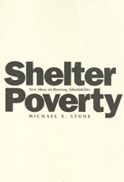

A progressive plan to solve the problem of housing affordability
A progressive plan to solve the problem of housing affordability


 A progressive plan to solve the problem of housing affordability
A progressive plan to solve the problem of housing affordability

|  |
Shelter PovertyNew Ideas on Housing AffordabilityMichael E. Stonepaper EAN: 978-1-56639-092-7 (ISBN: 1-56639-092-3) |
"...the most original—and profoundly disturbing—work on the critical issue of housing affordability...."
—Chester Hartman, President, Poverty and Race Research Action Council
In Shelter Poverty, Michael E. Stone presents the definitive discussion of housing and social justice in the United States. Challenging the conventional definition of housing affordability, Stone offers original and powerful insights about the nature, causes, and consequences of the affordability problem and presents creative and detailed proposals for solving a problem that afflicts one-third of this nation. Setting the housing crisis into broad political, economic, and historical contexts, Stone asks: What is shelter poverty? Why does it exist and persist? and How can it be overcome?
Describing shelter poverty as the denial of a universal human need, Stone offers a quantitative scale by which to measure it and reflects on the social and economic implications of housing affordability in this country. He argues for "the right to housing" and presents a program for transforming a large proportion of the housing in this country from an expensive commodity into an affordable social entitlement. Employing new concepts of housing ownership, tenure, and finance, he favors social ownership in which market concepts have a useful but subordinate role in the identification of housing preferences and allocation. Stone concludes that political action around shelter poverty will further the goal of achieving a truly just and democratic society that is also equitably and responsibly productive and prosperous.
Excerpt available at www.temple.edu/tempress
"Stone identifies many housing reform policies on the way to a right-to-housing that have been enacted at the federal, state and local levels. This gives hope that incremental changes, largely at the grassroots level, may eventually form the basis for more progressive, systematic changes at the national level when a political constituency for such change emerges."
—Shelterforce Online
Acknowledgments
Introduction
Part I: What Is Shelter Poverty?
1. Human Needs and Housing Affordability
2. The Shelter-Poverty Concept of Affordability
Part II: Why Does Shelter Poverty Exist and Persist?
3. The Historical Roots of the Affordability Problem to the Early 1930s
4. The Triumph and Illusions of Housing Policy and the Economy, 1930-1970
5. Economic Crisis, Shelter Poverty, and Housing Programs, 1970 to the Early 1990s
6. The Instability of Housing Production and Finance Since the Late 1960s
Part III: How Can Shelter Poverty Be Overcome?
7. Social Ownership
8. Financing and Implementing Social Ownership
9. Housing Reform with a Vision: Ownership and Production
10. Housing Reform with a Vision: Financing and Other Elements
11. Housing Affordability and Social change
12. Conclusion: Shelter Poverty and the Right to Housing
Appendix A: Methods and Issues in Deriving the Shelter-Poverty Affordability Standard
Appendix B: Determining the Extent and Distribution of Housing Affordability Problems: Methodological Comments
Appendix C: Tables of Shelter Poverty and Conventional Affordability Problems, 1970-1991
Notes
References
Index
Michael E. Stone (1943-2015) was Professor of Community Planning at the University of Massachusetts at Boston.
© 2015 Temple University. All Rights Reserved. This page: http://www.temple.edu/tempress/titles/947_reg.html.